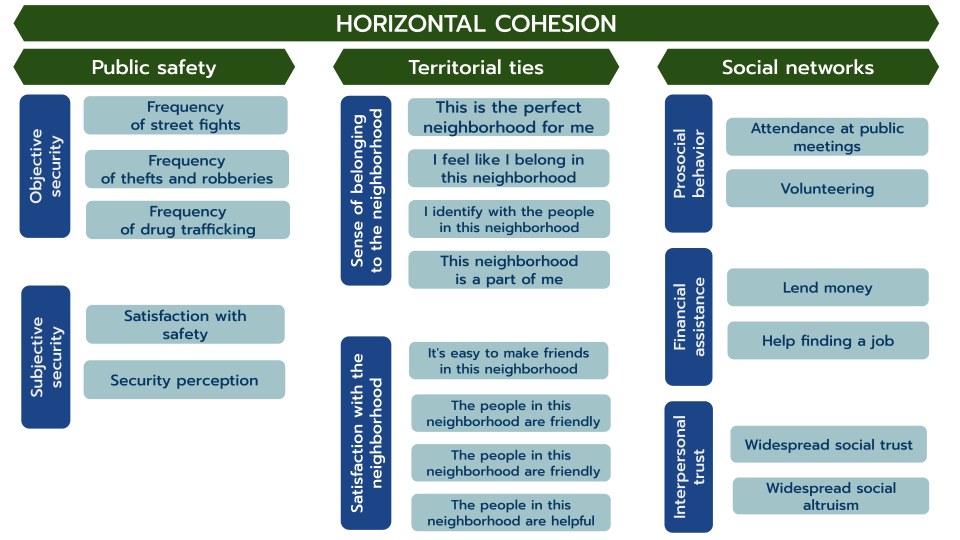
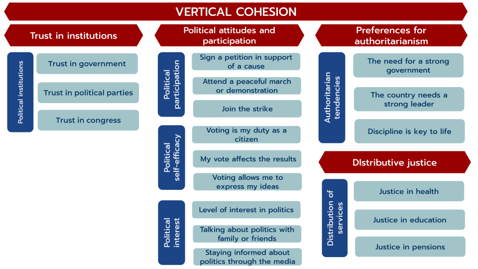

We had built already a visualizer for Latin America, but we didn’t have something specifically focused on Chile
In COES we had a panel survey which is ELSOC and last year we had a special funding since it was the last year of COES, so we decided to apply what we learn from the experience with VISLATAM to ELSOC data
We used secondary data from Chilean Longitudinal Social Study (ELSOC)
It is a panel survey that runs every year from 2016 to 2023, making it the only study of this kind in Chile and Latin America
For the visualization, the analysis includes participants who took part in at least three waves of the study, totaling 3,666 individuals.
We developed a measurement framework for social cohesion in Chile based on the approach proposed by Chan et al. (2006).
The framework is based on two dimensions:
Horizontal: addresses the relationships between individuals and social groups
Vertical: captures the interactions between individuals and social institutions


We applied a several analytical techniques for to arrive at the final version of the measurement framework.
Sub-dimensions were calculated as average indices to facilitate the interpretation of the results.
All the decisions behind the construction of the framework can be found in this methodological document.
The visualizer was completely created by the team at the Observatory of Social Cohesion (OCS).
It was built using code with Quarto and Shiny App.
The visualizer’s source code is open access and can be found in our GitHub repository
Results VISELSOC